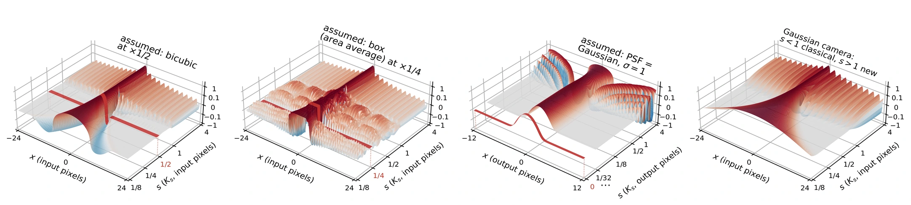

Abstract
We derive the optically aligned system of image-scaling operators $\mathbf{K}_s$ that reproduces optical zoom (exact zoom-out, canonical zoom-in), by identifying a Huygens-like consistency principle in which each pixel acts as a secondary source. The system is determined in closed form by the camera's point spread function (PSF), itself the operator $\mathbf{K}_0$. The operators compose, $\mathbf{K}_{s'} \circ \mathbf{K}_s = \mathbf{K}_{ss'}$ (with band projection for down-up), and account for both upscaling and downscaling, which form a Moore–Penrose pseudoinverse pair, $\mathbf{K}_{1/s} = \mathbf{K}_s^\dagger$. We show that image scaling, as routinely practiced, is neither optically faithful nor internally consistent; for example, common anti-aliasing rules generally correspond to no camera, and two resizes by a factor of $1/2$ generally do not equal one resize by a factor of $1/4$. Gaussian scale-space kernels cannot be exact finite-aperture PSFs. Gaussian scale-space is an idealized special case of what emerges here: a generalized scale-space for sampled images, derived entirely from camera optics, bidirectional, and not limited to Gaussian kernels. The system goes beyond scaling and supports composable and invertible subpixel geometric transformations. We empirically validate its optical predictions with real captures and noisy optics simulations, and demonstrate its practical impact on the stability of tasks such as super-resolution and classification.
Video
BibTeX
@misc{shocher2026unified,
title = {A Unified Theory of Image Scaling:
Point Spread Functions, Discrete Kernels, and Scale-Spaces},
author = {Shocher, Assaf},
year = {2026},
url = {https://assafshocher.github.io/image-scaling/}
}